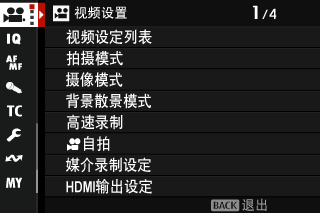
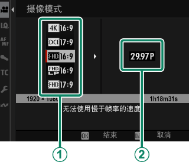
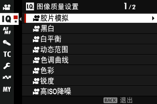
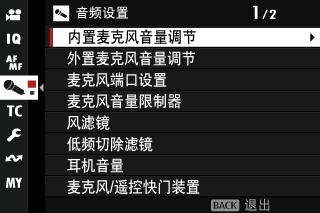
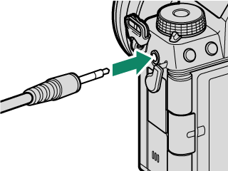
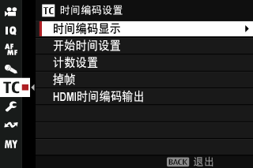
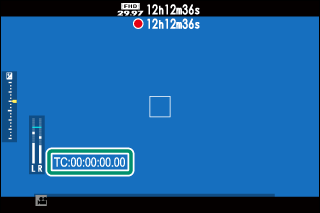

Ⅰ 本课目标Objectives
- 01为 Vlog、旅拍、专业交付三种用途分别选对摄像模式、帧率与比特率
- 02理解 All-I 与 Long GOP、4:2:0 与 4:2:2、8bit 与 10bit 的实际差别
- 03配置 F-Log / F-Log2 / HLG，并知道各自的 ISO 下限
- 04调好音频（内置/外接/XLR 四通道）与时间编码
- 05用斑纹与视频直方图控制高光，用 IBIS+DIS 稳住手持画面
- 06配出一套「自拍 Vlog」与一套「专业交付」的完整方案
- X-S20
- V30 以上存储卡
- （可选）外接麦克风
- （可选）耳机
Ⅱ 视频有自己的一套菜单Movie Menus
把模式拨盘转到 F（动画） 或 Vlog 后按 MENU/OK，你会看到另一套菜单——照片菜单里的设置在这里完全不生效。这是从索尼/佳能过来最容易困惑的地方。
| 选项卡 | 管什么 | 本课位置 |
|---|---|---|
| B 视频设置 | 拍摄模式、摄像模式、编码比特率、F-Log、稳定、斑纹、HDMI | 第 Ⅲ–Ⅵ 节 |
| H 图像质量设置 | 胶片模拟、白平衡、DR、色调曲线、帧间降噪 | 第 Ⅶ 节 |
| G AF/MF 设置 | 对焦模式、AF-C 速度/灵敏度、对象检测 | 第 Ⅷ 节 |
| P 音频设置 | 麦克风音量、风滤镜、低频切除、XLR 四通道 | 第 Ⅸ 节 |
| Q 时间编码设置 | 时间码显示、计数方式、掉帧、HDMI 输出 | 第 Ⅹ 节 |


Ⅲ 摄像模式、帧率与慢动作Resolution & FPS
路径：视频设置 > 摄像模式。操作顺序是「先上下选画面大小与纵横比 → 按右 → 再选帧率 → MENU/OK」。
| 规格 | 纵横比 | 适合 |
|---|---|---|
| J 6.2K | 3:2 | 需要裁切余量、或想要 3:2 画幅（可用 6.2K 拍摄后期裁成竖屏） |
| V 4K | 16:9 | 主流交付、B 站/油管 |
| d 4K | 17:9 | 电影宽银幕（DCI 4K） |
| W 全高清 | 16:9 / 17:9 | 标准全高清 |
| S 全高清 | 16:9 / 17:9 | 可拍更长的连续录制（文件更小、散热压力更低） |
帧率可选 23.98P / 24P / 25P / 29.97P / 50P / 59.94P，具体取决于所选摄像模式。23.98 / 24 有电影感，25 / 50 对应 PAL 地区灯光（国内拍室内更推荐，避免频闪），29.97 / 59.94 是 NTSC。
快门与帧率的黄金关系（你已经懂，这里只给数值）
- 25P → 快门 1/50；50P → 1/100；24P → 1/48 或 1/50。
- 这套「帧率两倍」规则就是所谓的 180° 快门，动作最自然。
- X-S20 在视频下用 S 或 M 模式（视频设置 > 拍摄模式）才能固定快门。
附 高速录制（慢动作）
| 项目 | 选项 | 说明 |
|---|---|---|
| 开启 | 开 / 仅限 HDMI 开启 / 关 | 「仅限 HDMI 开启」不录像到卡，只输出到外部录像机 |
| 画面大小 | W 16:9 / W 17:9 | 高速录制只支持全高清 |
| 记录速率 | 100P / 120P / 200P / 240P | 越高越慢 |
| 回放速率 | 23.98P–59.94P | 决定最终慢放倍数 |
高速录制不录音；文件会按所选比特率压缩。240P 记录 + 24P 回放 = 10 倍慢动作，拍水花、鸟飞很好用。
Ⅳ 编码与比特率：为什么你的卡会不够快Codec & Bitrate
路径：视频设置 > 媒介录制设定。三个维度：目标位置、文件类型与压缩、比特率。
| 格式 | 帧间压缩 | 色度采样 | 位深 | 特点 |
|---|---|---|---|---|
| H.264 ALL-I 420 MOV | All-I | 4:2:0 | 8bit | 兼容性最好，文件大 |
| H.264 LongGOP 420 MOV | Long GOP | 4:2:0 | 8bit | 体积与画质平衡 |
| H.264 LongGOP 420 MP4 | Long GOP | 4:2:0 | 8bit | 适合直接上传网络 |
| H.265 ALL-I 420 MOV | All-I | 4:2:0 | 10bit | 压缩率更高、有 10bit |
| H.265 LongGOP 420 MOV | Long GOP | 4:2:0 | 10bit | 长录制省卡 |
| H.265 ALL-I 422 MOV | All-I | 4:2:2 | 10bit | 专业交付首选（调色余量最大） |
| H.265 LongGOP 422 MOV | Long GOP | 4:2:2 | 10bit | 专业交付 + 长录制 |
附 All-I 与 Long GOP 到底差在哪
| All-I | Long GOP | |
|---|---|---|
| 压缩方式 | 每一帧独立压缩 | 多帧构成一组，只存差异 |
| 文件大小 | 大 | 小 |
| 剪辑流畅度 | 好（拖动不卡） | 依赖解码性能 |
| 适合 | 要后期深度处理、要精剪 | 长时间录制、直出交付 |
比特率可选 50 / 100 / 200 / 360 Mbps（受高速录制与压缩方式限制）。4:2:2 只在 MOV 下提供；H.264 输出 8bit，其余 10bit。选 4:2:2 10bit 意味着你必须用**更快的卡**，否则录制会中途停止。
给你三类用途的默认答案
- 自拍 Vlog / 随手记录：4K 25P + H.264 LongGOP 420 MP4 + 100Mbps。卡要求低、直传方便。
- 旅拍想调色：4K 25P/50P + H.265 LongGOP 422 MOV + 200Mbps。
- 专业交付：4K 25P + H.265 ALL-I 422 MOV + 360Mbps（或外录 RAW）。
附 HDMI 输出设定
| 项目 | 选项 | 说明 |
|---|---|---|
| HDMI 输出信息展示 | ON / OFF | 外接监视器要不要看到相机屏幕上的信息叠加 |
| HDMI 录制控制 | ON / OFF | 按快门时是否向 HDMI 设备发送起止信号（让外录机同步录制） |
| RAW 输出设定 | ATOMOS / Blackmagic / 关 | RAW 只输出到外录机，不存卡；ISO 限制 1000–12800；此时对焦变焦不可用 |
Ⅴ F-Log / F-Log2 / HLG：专业伽马Log & HDR
路径：视频设置 > F-Log/HLG 录制。它同时决定「存到卡里的是什么」和「输出到 HDMI 的是什么」。
| 选项 | 存卡 | HDMI 输出 | ISO 范围 |
|---|---|---|---|
| t 胶片模拟 | 套用胶片模拟 | 同卡内 | 常规 |
| u F-Log | F-Log | F-Log | ISO 640–12800 |
| v F-Log2 | F-Log2 | 套用胶片模拟 | ISO 1250–12800 |
| w HLG | HLG | HLG | ISO 1000–12800 |
F-Log 是什么、什么时候值得用
- F-Log / F-Log2 是平缓的宽色域伽马曲线——画面看上去灰、低对比，但保留了最大量的高光与暗部信息，专为后期调色设计。
- 代价：ISO 下限被抬高（F-Log 640、F-Log2 1250），意味着暗光下你必须接受更高的基准噪点。
- HLG 遵循 ITU-R BT.2100，不是给后期用的，而是在兼容 HLG 的屏幕上直接回放 HDR 效果。
- v F-Log2 那一档的巧妙之处：卡里存 F-Log2 素材，HDMI 上却输出带胶片模拟的画面——现场监看舒服，素材仍是专业格式。
Log 素材在取景时很灰，判断曝光要靠斑纹（第 Ⅵ 节）与波形/直方图，而不是眼睛。若要用「自然实时视图」或「F-Log 查看助手」（在屏幕设置里）可以在监看时套一个近似还原的效果——但那只影响显示，不影响文件。
Ⅵ 视频曝光辅助：斑纹、直方图、数据级别Exposure Tools
视频没有 RAW 的容错，回放才发现过曝就晚了。富士给了你三个工具。
| 工具 | 设置 | 怎么用 |
|---|---|---|
| 斑纹（Zebra） | 斑纹设置：右倾 / 左倾 / 关 | 可能过曝的高光被斜条纹覆盖，提前预警 |
| 斑纹水平 | 50–100 | 触发条纹的亮度阈值。人像肤色通常设在 70–80；Log 拍摄可设 95+ 只在真的接近溢出时提示 |
| 数据级别设置 | 视频范围 / 全范围 | 视频范围（8bit 16–235 / 10bit 64–940）是标准；全范围（0–255）留给特定后期流程 |
| 视频测光 | F 测光 | 与照片分开存储，需单独设（第 3 课的模式逻辑同样适用） |
斑纹怎么读
条纹出现在脸的高光部分（额头、鼻梁）说明已经到临界，该收一点曝光；出现在窗外的天空、灯泡上是正常的。把阈值调低会「到处都有条纹」，调高则只在真正危险时才出现——先固定一个阈值，再靠经验判断。
Ⅶ 视频画质：与照片分开的一套Movie IQ
路径：图像质量设置（动画录制）。九项里大部分与照片同名，但必须分别设置——这点务必牢记。
| 项目 | 与照片的差别 |
|---|---|
| F 胶片模拟 / 黑白 / 白平衡 / 色调曲线 / 色彩 / 锐度 / 高 ISO 降噪 | 选项相同，但各自独立存储 |
| F 动态范围 | 视频下没有「自动」；DR200 需 ISO ≥ 320、DR400 需 ISO ≥ 640；只在 F-Log 选「胶片模拟（t）」这一档时可用 |
| 帧间减噪 | 可选自动 / 关。拍移动主体或相机移动时可能出现「重影」 |
| F 周边亮度校正 | 开 / 关；若画面出现条带痕迹请选关 |
| x F 转接环设置 | 与照片共用一份设置（改一个另一个也变） |

Ⅷ 稳定与对焦：Vlog 的成败点IBIS & AF
A 图像稳定
| 选项 | 说明 | 用途 |
|---|---|---|
| IBIS/OIS | 机身 + 镜头光学防抖 | 常规手持 |
| IBIS/OIS + DIS | 再加数字防抖，会按摄像模式裁切画面 | 走动拍摄、大幅度晃动 |
| 关 | 屏幕出现 x 图标 | 三脚架固定机位 |
图像稳定模式增能：开适合不转动拍摄（更稳）；关适合摇镜（避免镜头「追不上」）。可以把它指派给功能按钮，在录制中随时切换。
B 视频对焦
| 项目 | Vlog 建议 |
|---|---|
| 对焦模式 | AF-C |
| 自动对焦模式 | 广域/跟踪（自拍走动）；单点（产品、定机位） |
| 脸部识别 / 眼睛识别 | 开 + 眼睛识别自动 |
| AF-C 自定设置（视频版） | 追踪灵敏度偏低、速度追踪偏低 → 焦点更「稳」，不会来回呼吸 |
| ISO 按钮在视频下 | 打开的是视频菜单的 ISO 项，不是照片的 |
Vlog 档的两个专属开关（第 2 课提过，这里说清用途）
- 背景散景模式 = 开：无论你设了什么，光圈固定为最大。自拍时背景更虚、主体更突出。建议同时把拍摄模式设为 P 或 A 以保证曝光连续。
- 产品优先模式 = 开：对焦锁定在前景物体上。做开箱、测评时手伸进去也不会跳到手上。
Ⅸ 音频设置：比画质更容易翻车Audio
路径：音频设置（动画录制）。视频圈有句话：观众能忍糊画面，但忍不了坏声音。
| 项目 | 选项 | 建议 |
|---|---|---|
| 内置麦克风音量调节 | 自动 / 手动（25 级）/ 关 | 室内固定机位用手动并试录；走动用自动 |
| 外置麦克风音量调节 | 自动 / 手动 / 关 | 接了外接麦就把它当主声道 |
| 麦克风端口设置 | 麦克风 / 线路 | 接相机麦选「麦克风」；接调音台等线路输出选「线路」 |
| 麦克风音量限制器 | 开 / 关 | 建议开：防止突然的大声（笑声、关门）爆音 |
| 风滤镜 | 开 / 关 | 户外必开；但会略损高频 |
| 低频切除滤镜 | 开 / 关 | 减少空调、车流等低频嗡声 |
| 耳机音量 | 0–10 | 录制时监听是唯一可靠的判断方式 |
| 麦克风/遥控快门装置 | 麦克风 / 遥控 | 插的是快门线就选「遥控」，否则按下会变成录/停 |
附 XLR 麦克风适配器：四通道
| 项目 | 选项 | 说明 |
|---|---|---|
| 麦克风输入通道 | 4 通道 XLR + 相机 / 仅限 2 通道 XLR | 前者同时录外接与内置，共四声道 |
| 4 通道音频监听 | XLR / 相机 | 耳机里听哪一路 |
| HDMI 4 通道音频输出 | XLR / 相机 | 输出给外录机的音频来源 |
四通道录制只在文件格式为 MOV 时可用。回放时带四声道音频的文件会显示四通道图标。


附 时间编码设置
| 项目 | 选项 | 什么时候需要 |
|---|---|---|
| 时间编码显示 | 开 / 关 | 多机位同步时打开，画面上能看到时间码 |
| 开始时间设置 | 手动输入 / 当前时间 / 重置（00:00:00） | 多机位对齐用手动统一 |
| 计数设置 | 录制运行 / 自由运行 | 录制运行只在录制中计时；自由运行持续走时，多机位首选 |
| 掉帧 | 开 / 关 | 59.94P、29.97P 下让时间码与实际时长严格匹配；23.98P 无法使用 |
| HDMI 时间编码输出 | 开 / 关 | 外录机需要时间码时打开 |


Ⅹ 交付：两套视频方案Recipes
把这一课收成两张表。第一套偏「随手拍好、能直接发」，第二套偏「要调色、要交付」。
| 项目 | 方案 A · 自拍 Vlog | 方案 B · 专业交付 |
|---|---|---|
| 模式拨盘 | Vlog | F（动画） |
| 拍摄模式 | P 或 A（保证曝光连续） | M 或 S（锁快门） |
| 摄像模式 / 帧率 | 4K 16:9 · 25P | 4K 16:9 · 25P（或 50P 留慢动作） |
| 编码 / 比特率 | H.264 LongGOP 420 MP4 · 100Mbps | H.265 ALL-I 422 MOV · 200–360Mbps |
| 快门 | 自动（或 1/50） | 1/50 固定 |
| ISO | 自动3（上限 6400） | 手动 640 起（配 F-Log） |
| F-Log/HLG | t 胶片模拟 | u F-Log（或 v F-Log2 + HDMI 监看） |
| 胶片模拟 | ETERNA / ASTIA | —（Log 下无意义，后期套 LUT） |
| 对焦 | AF-C + 广域 + 眼睛识别自动 | AF-C + 单点 / 区；速度灵敏度调低 |
| 稳定 | IBIS/OIS + DIS（增能开） | 三脚架则关；手持则 IBIS/OIS |
| 斑纹 | 开，水平 75 | 开，水平 95 |
| 音频 | 风滤镜开、限制器开、音量自动 | 外接麦 + 手动音量 + 试录 + 监听 |
| 数据级别 | 视频范围 | 视频范围（除非后期明确要求全范围） |
| 存储卡 | V30 起 | V60 / V90（ALL-I 422 360Mbps） |
Vlog 自拍的三个机位习惯
- 屏幕翻转向前，用触摸屏点自己的脸来对焦（触摸屏模式设为「区域」最安全）。
- 走动时用 DIS，但要接受画面被裁切；站定讲话时关掉 DIS 更锐。
- 录之前先试录 10 秒并回放听声音——这是覆盖率最高的一条检查。
Ⅺ 迁移提示From Sony / Canon
视频这块，和索尼 / 佳能最不一样的 5 点
- 视频菜单是独立的另一套：胶片模拟、白平衡、DR、对焦参数全部另存。索尼的「照片/视频分别设置」概念相同，但富士连「动态范围自动」都不给视频用。
- 三个录制入口（t 按钮 / F 档 / Vlog 档），设定还互相独立。索尼基本是「一个视频模式」。
- Vlog 档是独立的模式位，自带触控设定面板与两个专属开关（背景散景、产品优先）。这在索尼/佳能上没有直接对应物。
- F-Log2 的 ISO 下限 1250：比索尼 S-Log3 的基准（通常 800）更高，暗光下要有心理准备。
- 斑纹必须手动开：索尼叫「斑马线」默认可以常开；富士要进「视频设置 > 斑纹设置」显式开启。
Ⅻ 课后练习Exercise
-
01
选择：想拍 10 倍慢动作的水花，摄像模式与高速录制怎么设？
参考答案
摄像模式选全高清（W 16:9）——高速录制只支持全高清；「高速录制」设为开，记录 240P、回放 24P，即 10 倍慢放。注意高速录制不录音。
-
02
判断：把 F-Log/HLG 录制选为「F-Log2」后，存到卡里的文件和输出到 HDMI 的画面都是 F-Log2。
参考答案
错误。选 v F-Log2 时，卡里存 F-Log2，但 HDMI 输出的是套用了胶片模拟的画面，方便现场监看。另外 F-Log2 的 ISO 下限是 1250。
-
03
简答：多机位拍摄时想让三台机器的时间码严格对齐，时间编码设置里最关键的两项是什么？
参考答案
① 计数设置选「自由运行」（持续走时，而非只在录制时计时）；② 开始时间设置用「手动输入」把各机统一到同一时刻。若帧率为 29.97P / 59.94P，还需把掉帧设为开以匹配实际时长。
实拍小任务（Vlog 向，15 分钟）
用方案 A 拍一段 60 秒的自拍口播：走动 20 秒 + 站定 40 秒。要求：① 走动段开 DIS，站定段关掉；② 全程开斑纹并盯住脸部高光；③ 录完立刻回放，听声音是否爆音、看焦点是否在眼睛上。把这一套存进 C3（视频库）。
ⅩⅢ 出处与延伸Sources
- 本课对应的官方说明书页面（主教材）
- 视频设置（动画录制） — 拍摄模式、摄像模式、背景散景、高速录制、自拍、媒介录制设定、HDMI 输出、F-Log/HLG、数据级别、斑纹、稳定、ISO
- 视频设置（静态摄影） — 照片模式下可预设的视频项
- 图像质量设置（动画录制） — 视频版胶片模拟/白平衡/DR/色调曲线/帧间减噪
- AF/MF 设置（动画录制） — 视频对焦参数
- 音频设置（动画录制） — 麦克风音量、风滤镜、低频切除、耳机、XLR 四通道
- 时间编码设置（动画录制） — 时间码显示、计数设置、掉帧、HDMI 输出
- 版权说明
- 本课插图均取自 FUJIFILM 官方在线说明书，© FUJIFILM Corporation，仅用于个人学习。
学习提醒
下一课转向「把相机调成你顺手的样子」：设置菜单六大项、我的菜单/Q 菜单/Fn 键三个快捷系统，以及手机传图、网络摄像头、连线拍摄等连接工作流。